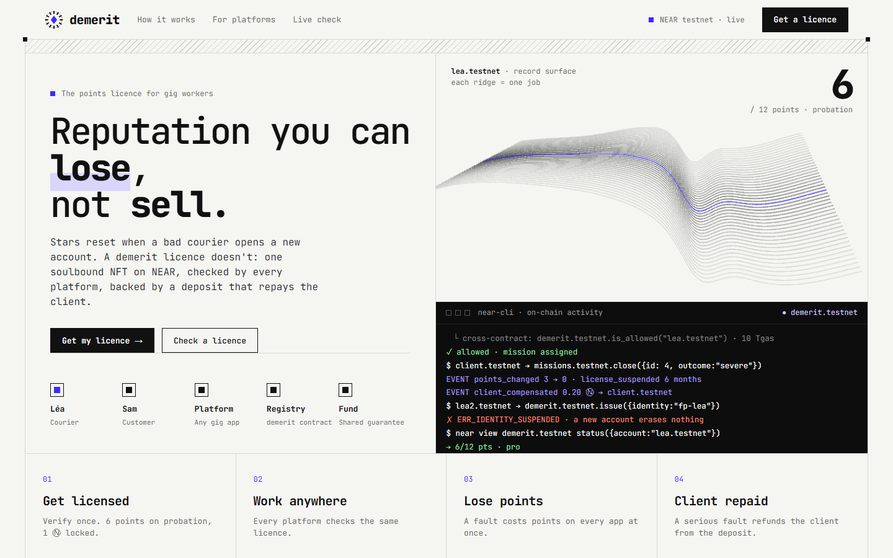
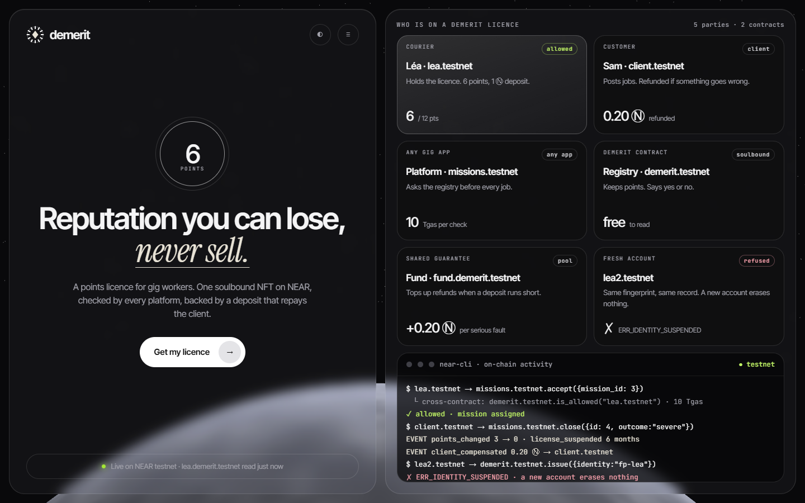
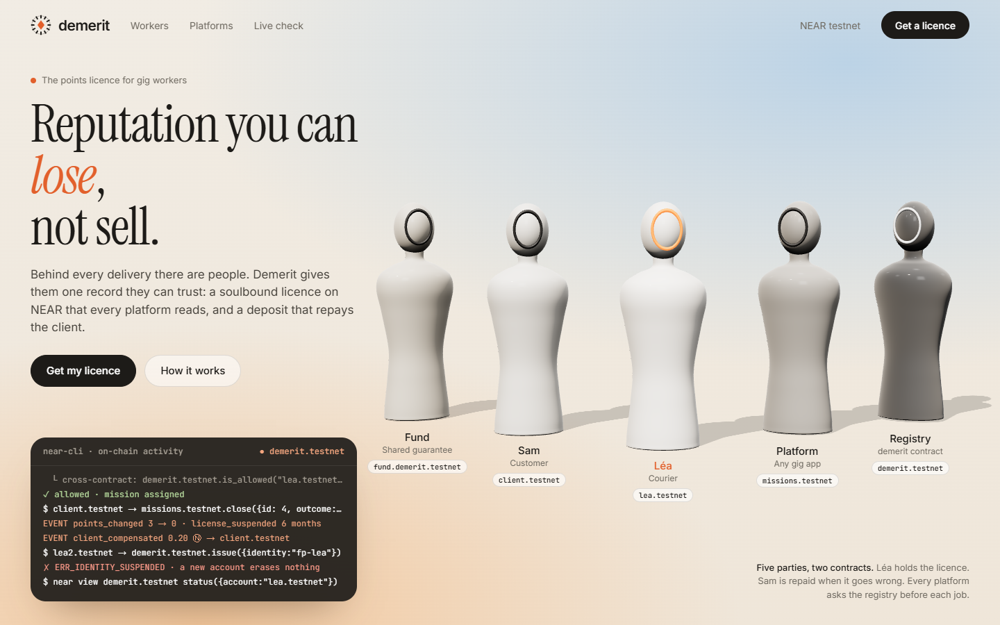
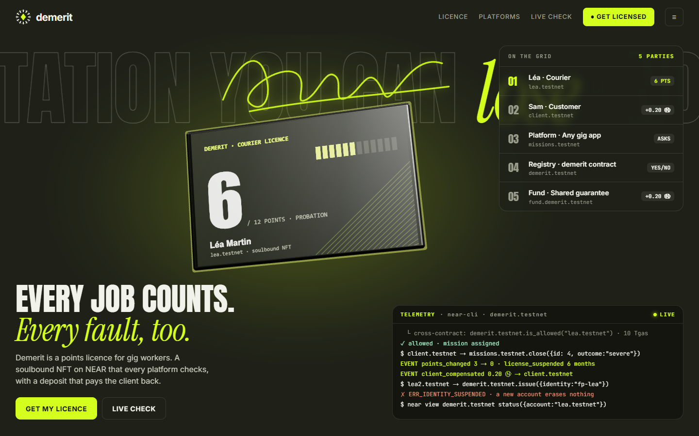
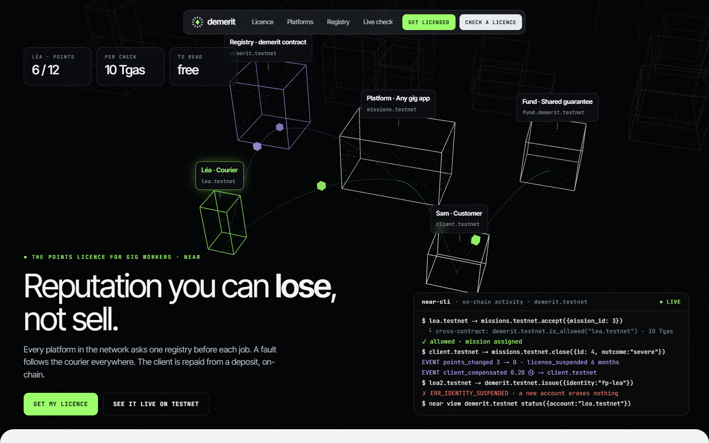

V26 · 5 planches, repartir de zéro
Références : iterate.inc · hackodds · 1x.tech · microsoft.ai · landonorris.com · terminal-industries.com · awwwards 3D. Toutes en 3D (Three.js), logo + nom, slogan, 5 parties visibles, terminal lisible sans chevauchement.

D'après iterate. Blanc, police mono, cadre hachuré, ruban 3D en fil de fer où chaque arête est une mission et le creux une faute. Terminal noir collé sous la 3D.

D'après hackodds. Panneaux de verre fumé, italique serif, badge « 6 points », planète NEAR avec son orbite, une carte par partie.

D'après 1X et microsoft.ai. Ciel chaud, titre serif, cinq silhouettes 3D mates (une par partie), visage de Léa en orange.

D'après Lando Norris. Olive et citron vert, typo condensée géante, signature dessinée, licence en carte physique 3D, classement « on the grid ».

D'après terminal-industries. Ville en nuage de points, les 5 parties en volumes filaires, colis qui circulent sur les routes, terminal en HUD.